Chapter 1 — Virtual Brand Ambassador:
Step1: Create Virtual Ambassador
Designed a virtual persona specifically tailored to resonate with the trend-conscious female demographic in their 20s and 30s. I analyzed current fashion and lifestyle trends on TikTok to create a character with a 'relatable yet aspirational' aesthetic.
By aligning the character's viual style (makeup, fashion, vibe) with the target audience's preferences, I ensured maximum engagement and viewer retention.
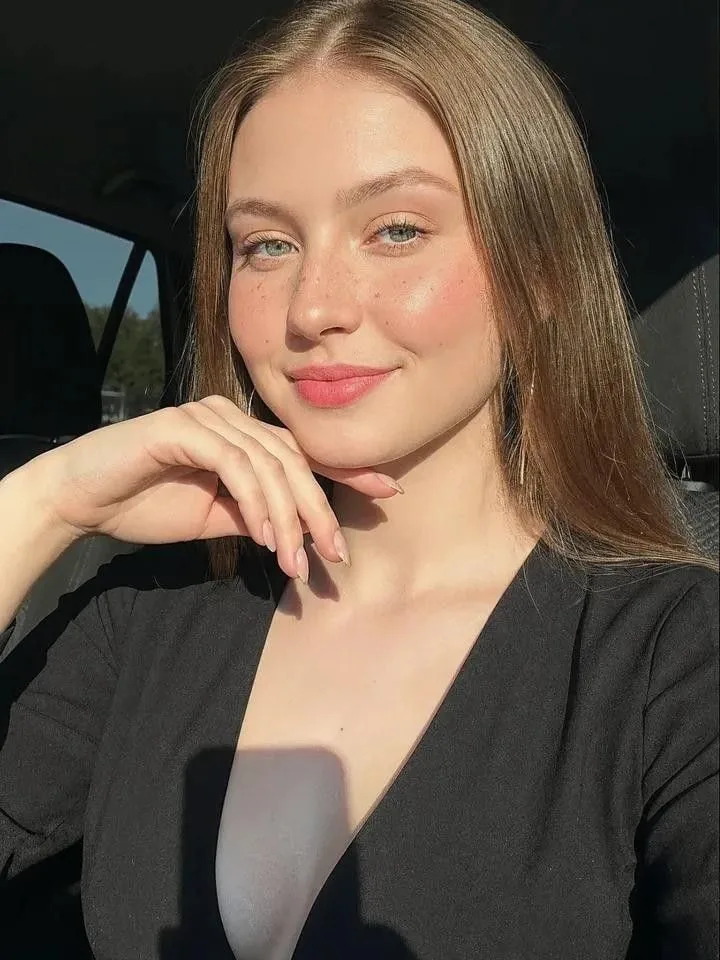
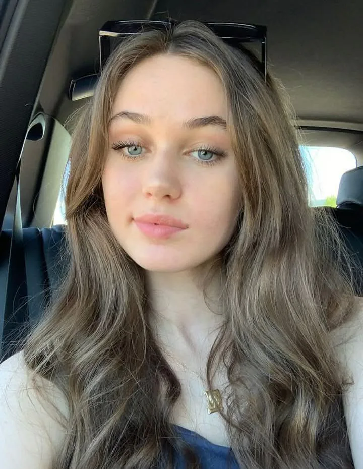
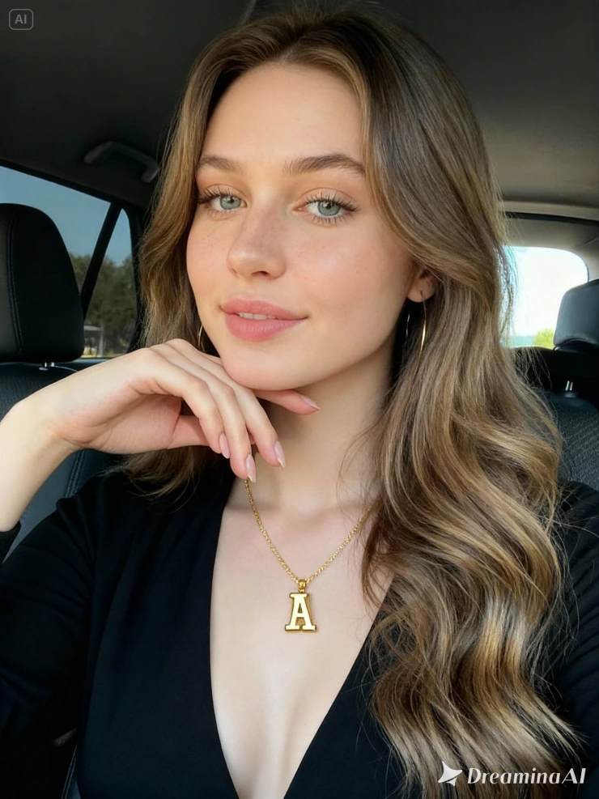
Step2: Consistency Control
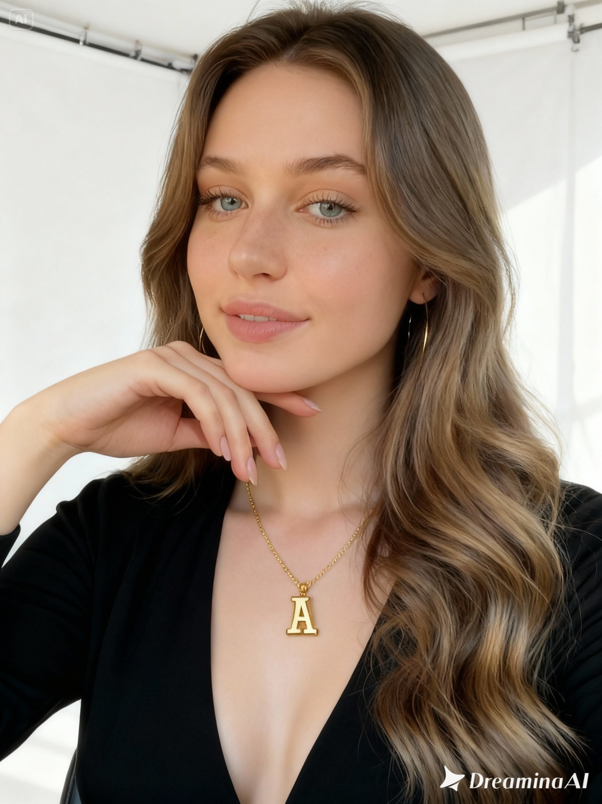
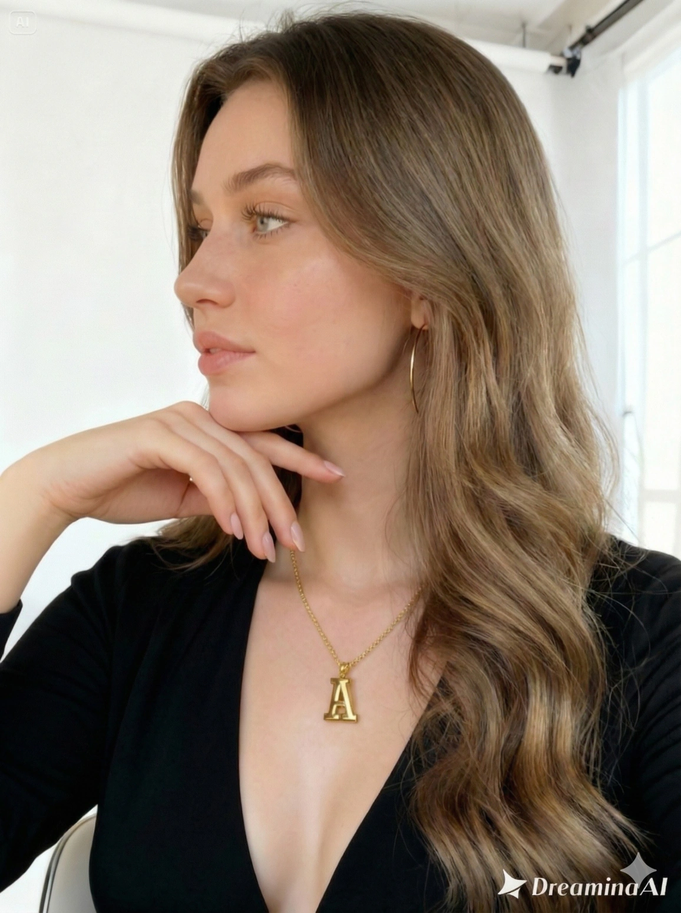
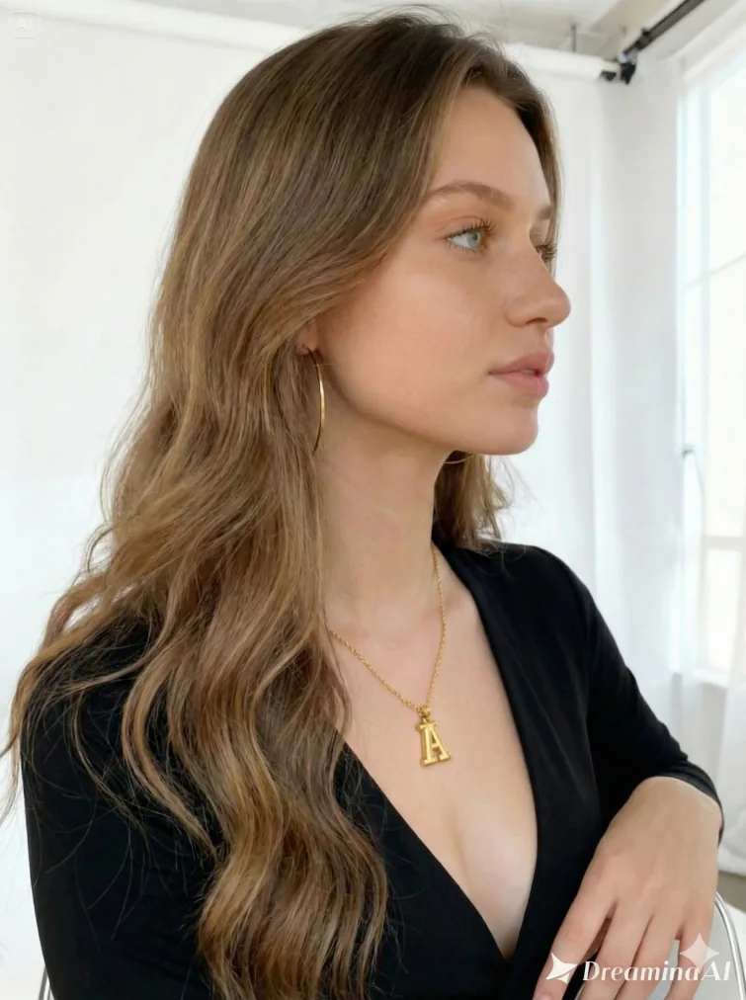
Maintaining Consistency
Step3: Apply the Product to Her Face
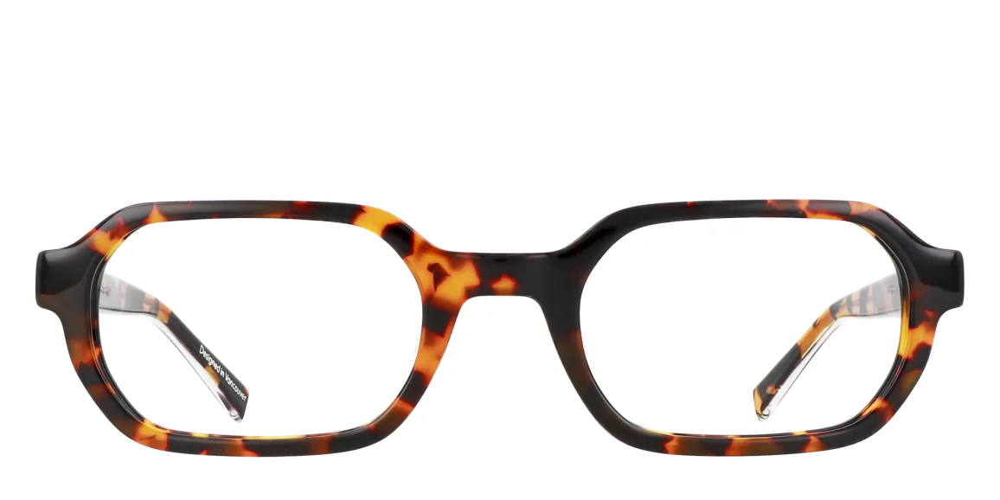
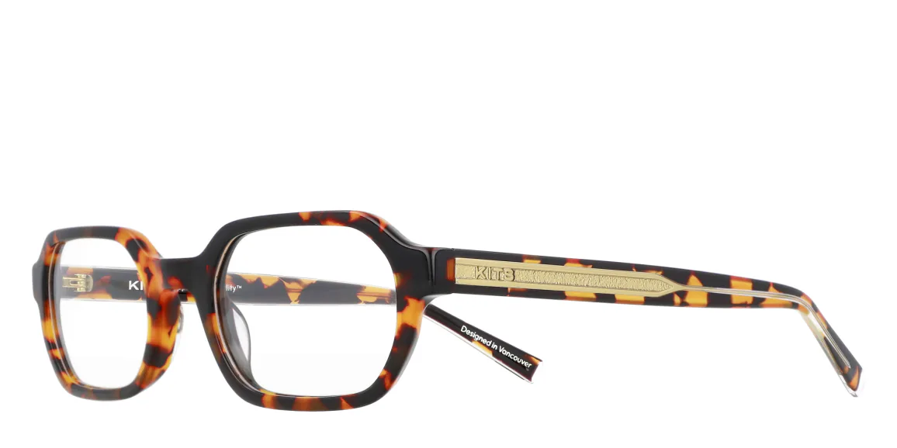
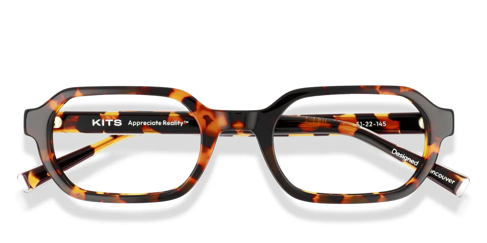
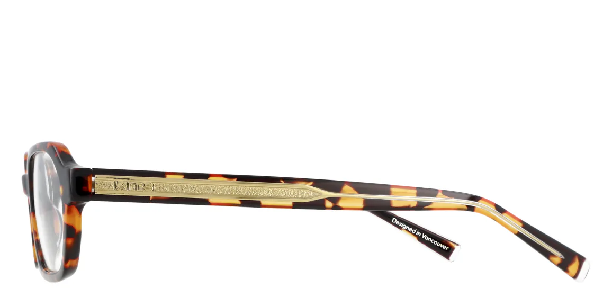
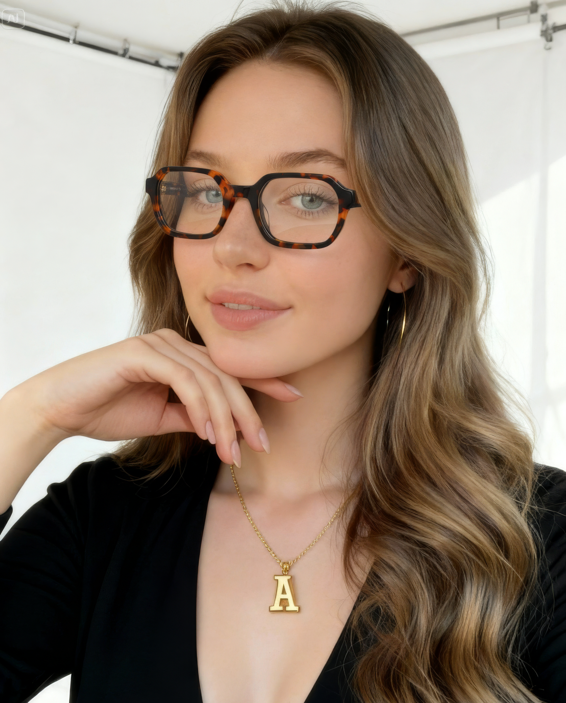
Step 4: Image-to-Video
Transformed static assets into dynamic video using Veo 3.1. Focused on natural head movements and blinking to reduce the "uncanny valley" effect.
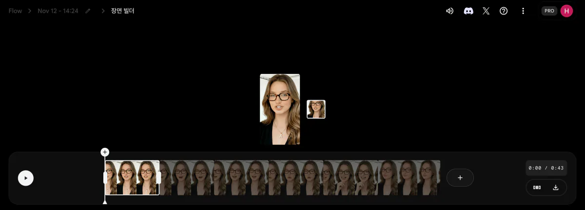
Veo 3.1 - Quality
Chapter 2 — Color Contacts Campaign:
KITS Color Visuals for Facebook Paid Ads
KITS Color Model Image to Video
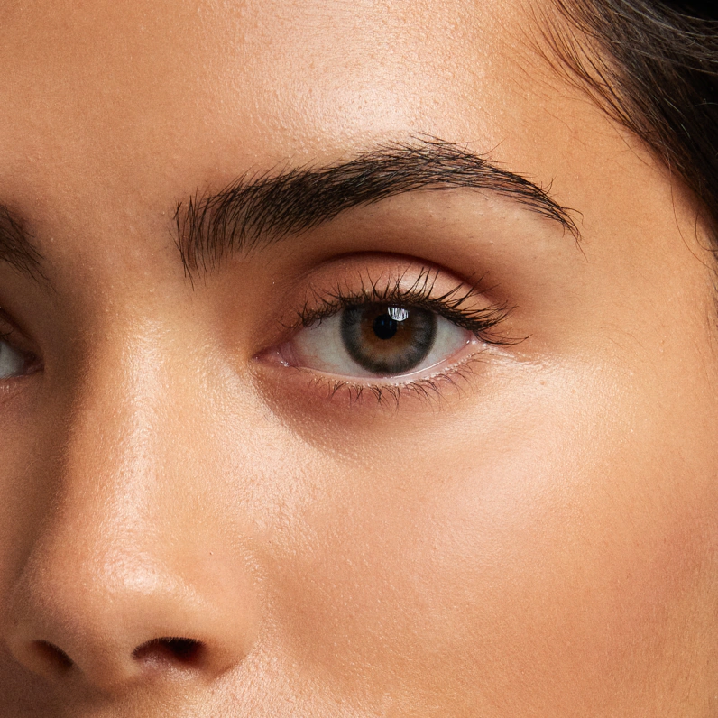
Image to Video
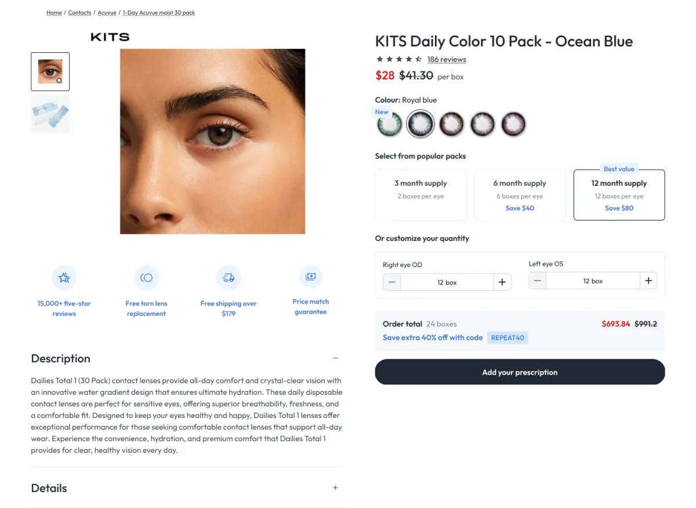
Mock-up